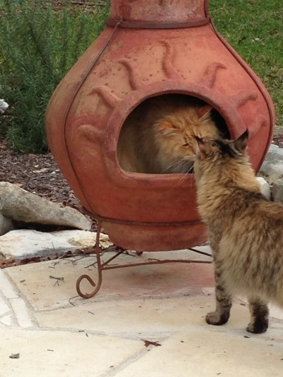
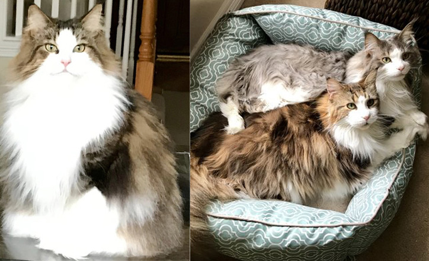
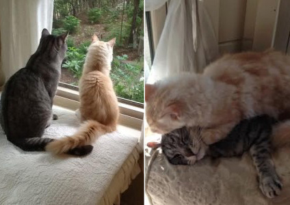
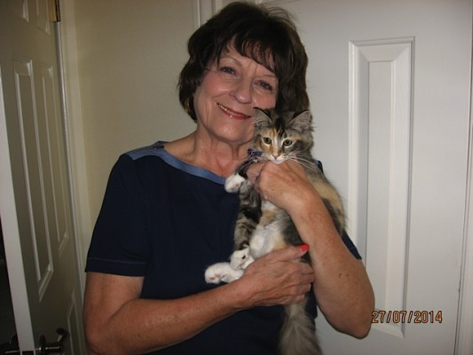
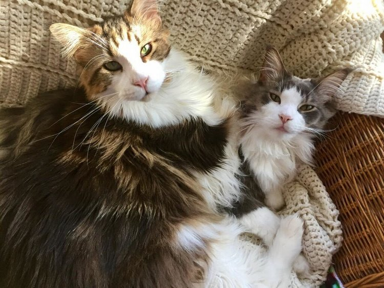
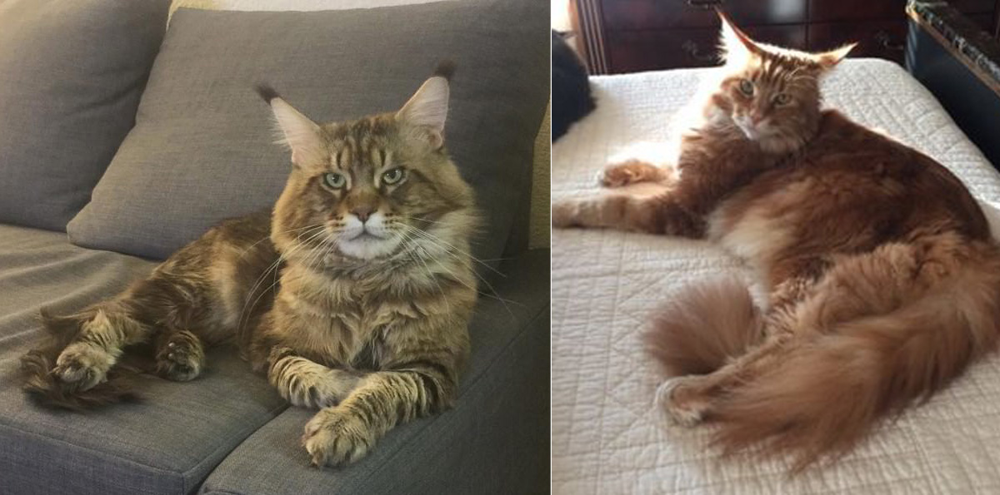

Madison & Mason – Red With White/Torbie

"Hi Pip: Jeanne, Katie and I just wanted to tell you how happy we are with Mason and Madison. They are the best cats ever! We love to share their pictures with you and keep you up to date. We know you are really their “mom”. From our first contact with you through the day we picked them up to bring them home your love and care for them was obvious. They’re both growing into healthy Maine Coons. They love to be with us wherever we are. They love our Sheltie “Sparky”.
They are Sparky’s best friends! Sparky and Maddie roll around on the floor together and chase each other through the house. Always entertaining! They play fetch and love water! If water is running anywhere they will be playing in it. While they’re not necessarily “lap babies’ they will follow us from room to room and make a point to provide some lap time but will then lay on the couch next to you. They are always in arms reach. We check your website often and see that you continue to raise fabulous cats!Best Regards, James”
Holly - Brown Mackerel Maine Coon

Holly has just turned six. We got her from you a little over two years ago. She is so affectionate, happy, & healthy. I can hardly believe how much joy she has given me. Oliver (blue & white) & Max will be turning five in the next week. It is difficult to get a photo of them separately because they are either in motion, playing, or snuggling.
Keli - Torbie Maine Coon
“Pip, I cannot begin to tell you how much I love baby Keli. She is 4 months old and weighs 4.2 pounds and is very healthy. My husband gave me a sign to put up that said, “My cat is not spoiled; I am just well trained.” It is true.
I spend lots of time playing with her and holding her. She loves to chase balls and the laser light is the most fun of all. She has loads of toys also. The first day I introduced her to her bed–well, she loves it and after lots of play she nestles in for a long nap. The most fun is her cat tree.
Climbing it and sleeping on the top platform is a favorite activity. I know you said cats do not sleep with people—sorry Keli sleeps right beside me. The first night my husband suggested that I put her in bed with us because he was afraid she was too lonesome being away from other cats. Well, she slept all night in one spot beside me. So, now as soon as we get in bed she jumps up and settles down. Bettie”
Opie - Maine Coon
“Hi Pip, I can’t believe that Opie is 16 wks old already ! He is so great! We love him so much and he is having a great time! We had our first company this weekend, since he came to live with us . My three little great nieces… He loved playing with them, wasn’t one bit afraid! And as you can see~ He loves Ollie, and Ollie loves him!
He sleeps with us at night and watches Tv with us in the evening ,always hanging out with us! As a matter of fact , he’s on my desk right now messing around with everything! You did such a wonderful job raising him, we can’t thank you enough! It is such a wonderful and unselfish thing that you do for we humans and your babies! We will always be grateful to you for our sweet boy! I hope that all is well with you and yours! Warmly, Kathy”
Max & Oliver - Maine Coon
“I just wanted you to know that we’ve all had a wonderful week. The kitties are so sweet and pretty funny! I can’t believe how social, affectionate,and well-adjusted they are. We’ve never had kitties like this before. They both sleep on the cat tree and enjoy watching the critters (a neighbor’s cat, squirrels, doves, etc.) in our backyard when we’re taking a break from playing. Max has started dragging his toys to my feet so he can play close.
Oliver has discovered the computer and wants to be held for a long time, first thing in the morning. We haven’t put them with Toby yet. Toby was hissing a lot at first but now seems to be adjusting. I hope to gradually begin introducing them to Toby and the house very soon.Thank you for such amazing kittens!! Roxie Elrod”
Tybee & Amadeus - Maine Coons
“Dear Pip: We cannot thank you enough for the honor to adopt our handsome boys. It had been a dream of ours to own a beautiful and loving Maine Coon. We are blessed to have found you and now have our two amazing boys: Tybee Anacrusis and Amadeus Legato. Tybee is such a sweet boy.
He is friendly to everyone and loves all the attention he gets. He follows us where ever we go and loves to lay by your side. He is definitely a magnificent cat in sight and personality. He also plays fetch and loves water! He is 1 year old in these photos and he gets more handsome every day! Amadeus is extremely friendly and playful. He loves his brother Tybee.
He has the most beautiful sage green eyes and his coat is silky soft. He is very affectionate and will lie on our lap or snuggle with us when we sleep. He adores chasing the special spring toy that came home with him. He is 11 months old in these photos and is growing into a very handsome boy! Both boys also enjoy getting brushed and love their paws rubbed. Their tails are amazing and fluffy! They are the main attraction to all who visit us and we love them so very much! – Thank You”
